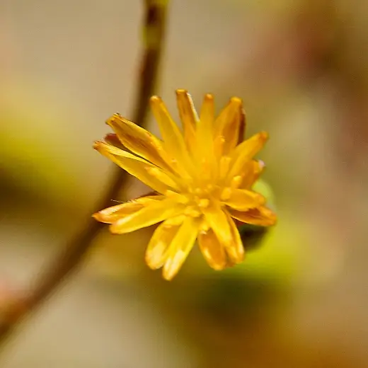

Wild lettuce
Wild lettuce is a wild green you can forage from April to June in Northeast, Southeast, Midwest and Great Plains. Tall plant of field edges with milky sap, deeply lobed leaves without spines on the midrib, and small pale yellow flowers.

When is wild lettuce in season in the United States?
Wild lettuce is usually in season April to June. Timing shifts with weather, latitude and altitude.
Where does wild lettuce grow in the United States?
Wild lettuce grows in Alabama, Arkansas, Colorado, Connecticut, Delaware, District of Columbia, Florida, Georgia, Illinois, Indiana, Iowa, Kansas, Kentucky, Louisiana, Maine, Maryland, Massachusetts, Michigan, Minnesota, Mississippi, Missouri, Montana, Nebraska, New Hampshire, New Jersey, New York, North Carolina, North Dakota, Ohio, Oklahoma, Pennsylvania, Rhode Island, South Carolina, South Dakota, Tennessee, Texas, Vermont, Virginia, West Virginia, Wisconsin. Regions: Northeast, Southeast, Midwest, Great Plains.
How do you recognise wild lettuce?
Tall plant of field edges with milky sap, deeply lobed leaves without spines on the midrib, and small pale yellow flowers.
How do you harvest wild lettuce?
Pinch off young tips and top leaves before the plant flowers, when they are tender and mild. Leave the roots and lower leaves so it regrows. Pick away from roads, sprayed verges and dog-walking paths.
How do you eat wild lettuce?
Young leaves raw or cooked like any bitter green.
How do you store wild lettuce?
Best fresh.
What is wild lettuce good for?
Vitamin A.